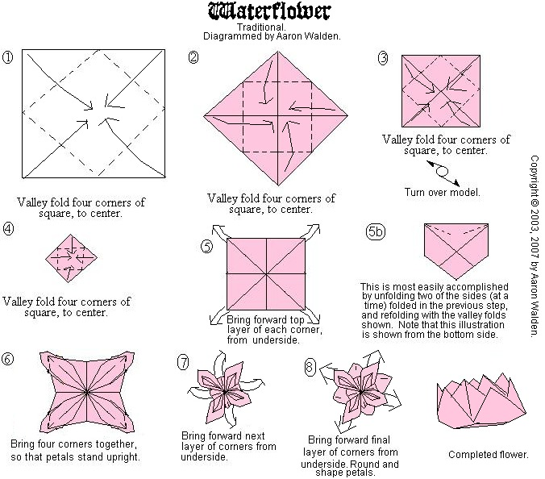

Just like any other flower the meaning behind the water Lily depends on its colour.White is a symbol of purity; blue symbolizes knowledge and wisdom, and red is a symbol of love. The pink lotus is considered the supreme lotus as it is associated with holy deities.
